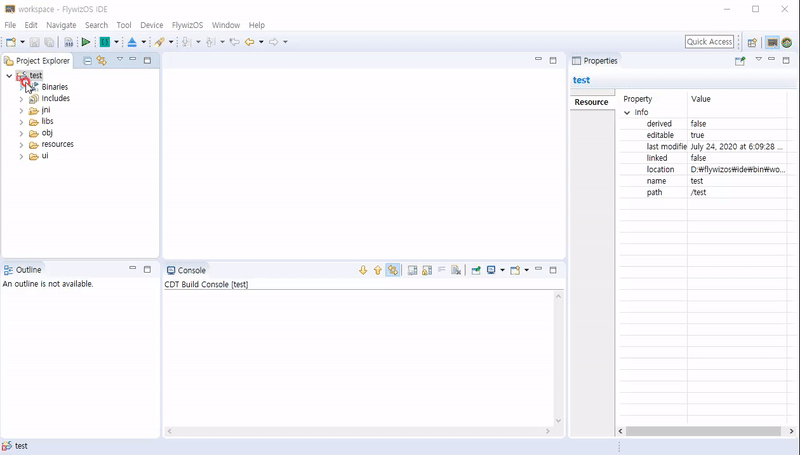
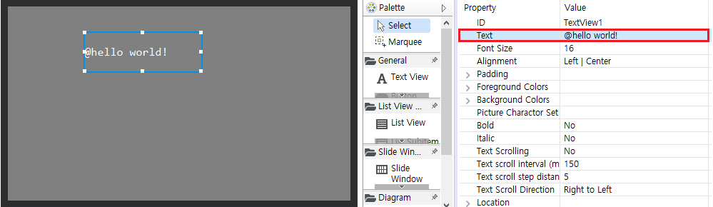

複数の言語
FlywizOSは、複数の言語をサポートします。
使い方
まずnew wizardを使用して、複数の言語のためのファイルを作成します。

ファイルの作成後、プロジェクトフォルダにi18nフォルダが作成され、基本的なtrファイルが生成されます。各trのファイル名は、対応する言語を示します。（ファイル名は任意に変えないことをお勧めします。）
trファイルをダブルクリックしてオープンするとxml形式のコンテンツを見ることができます。ここでstring tagのnameはaliasで使用され、コードの上で文字列を表します。
Note : Alias cannot be duplicated in the same tr file.
<?xml version="1.0" encoding="utf-8"?> <resources> <string name="hello_world">Hello world!</string> <string name="hello_flywizos">Hello, FlywizOS</string> </resources>もし文字列に改行をしたい場合は

を追加します。以下は例です。<?xml version="1.0" encoding="utf-8"?> <resources> <string name="new_line_test">first line
second line</string> </resources>上記の文字 "hello、world!" のaliasを
hello_worldそして文字 "hello、FlywizOS"のaliasをhello_flywizosに決めました。より多くの文字列とaliasを追加したい場合は、例のstringtagを参照してください。複数の言語のために、各言語に同じ
nametagを追加します。このように、設定言語を変えたとき、システムは自動的にその言語に対応した同じnametagの文字に置き換えます。言語ファイルが追加された後、開発者は、UIファイルとコードでそれを使用することができます。
UIファイルを開いて、コントロールのプロパティのTextに @hellow_worldを入力した後、基板にダウンロードして実行すると、そのコントロールにHello、world！が表示されていることを確認することができます。（@シンボルは@の後のテキストが言語ファイルのaliasであることを示しています）

また、コード上でも同じようにaliasを使用することができます。
setTextTr()関数がその方法です。 例 :/** * Triggered when the activity is constructed */ static void onUI_init() { // The parameter of setTextTr() is the name value in the language file. Note: The string passed in here does not need to be // preceded by the @ symbol mTextview1Ptr->setTextTr("hello_world"); }プログラムをボードにダウンロードして実行すると、そのコントロールにaliasに対応する文字が表示されることを確認することができます。
また、言語ファイルのaliasを利用してコンテンツを取得することもできます。例：
#include "manager/LanguageManager.h" static bool onButtonClick_Button1(ZKButton *pButton) { //LOGD(" ButtonClick Button1 !!!\n"); std::string hello = LANGUAGEMANAGER->getValue("hello"); std::string world = LANGUAGEMANAGER->getValue("world"); std::string ret = hello + " " + world; LOGD("ret: %s\n", ret.c_str()); return false; }
言語を変更する
- システムのデフォルト言語はzh_CN(Simplified Chinese)です。
- システムに内蔵された言語設定アクティビティを使用して言語を変更できます。
次のコードは、言語設定アクティビティを実行する例を示します。EASYUICONTEXT->openActivity("LanguageSettingActivity");EASYUICONTEXT->updateLocalesCode("zh_CN"); //Set to Chinese EASYUICONTEXT->updateLocalesCode("en_US"); //Set to English EASYUICONTEXT->updateLocalesCode("ko_KR"); //Set to Korean
フォントの要件
複数の言語は、フォントのサポートが必要です。もしその文字がフォントにない場合は非正常に表示されます。したがって、使用されるフォントも、複数の言語が含まれている必要があります。
システムの基本的なフォントは簡体字中国語のです。複数の言語のためにカスタムフォントを追加することをお勧めします。Font cuttingを参照してください。
例
完全なソースは、サンプルコードのTranslationDemoを参照してください。